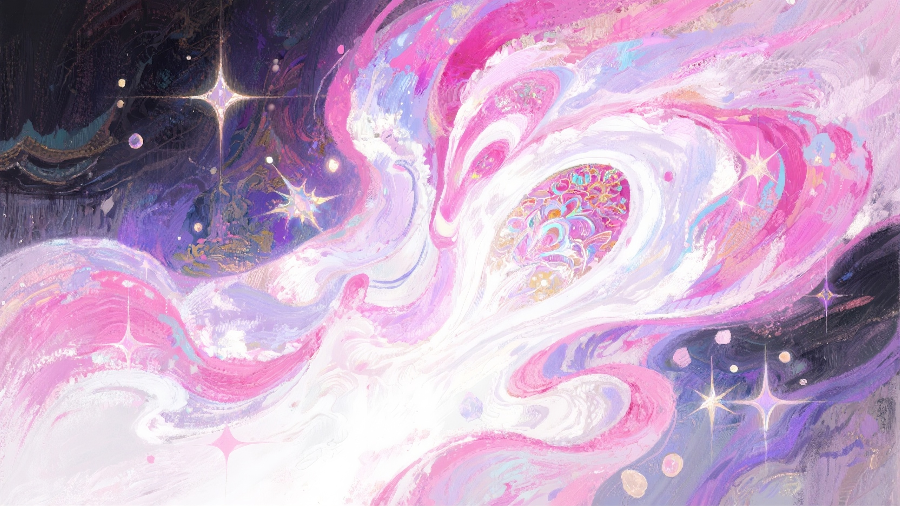
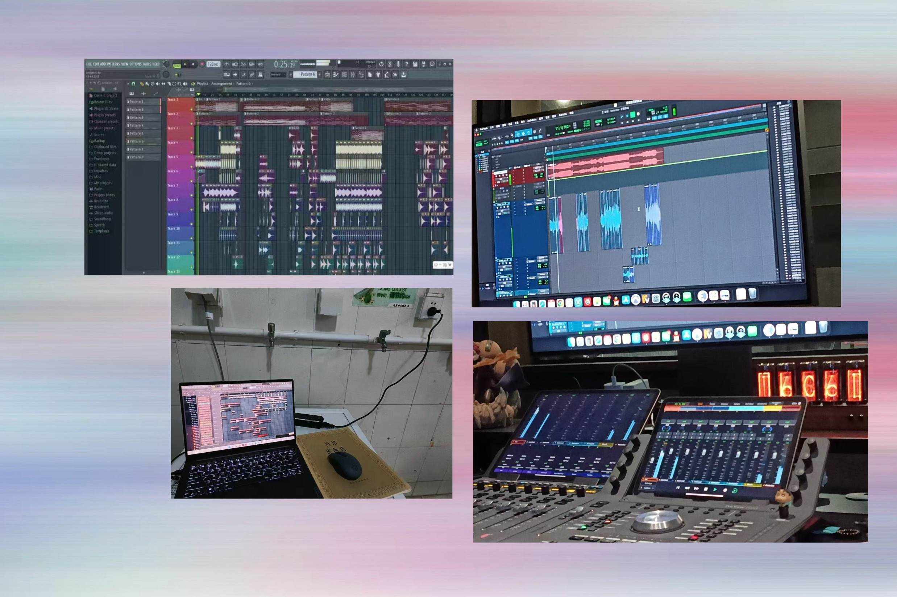
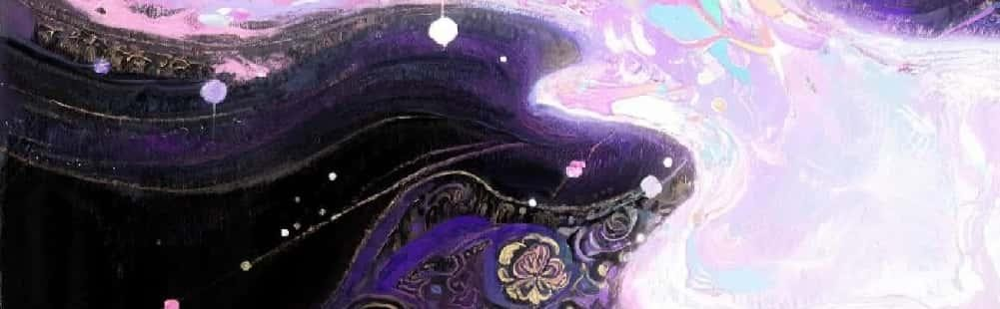
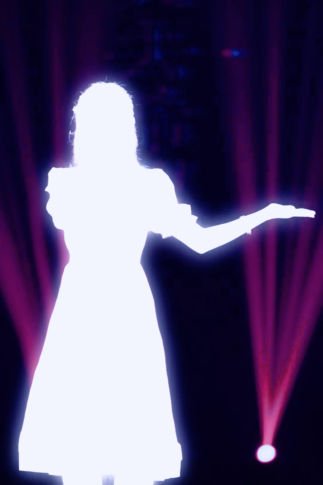

BNU 4th Art Festival · Theme Song · China's Outstanding Singer-Songwriter of 2024
Songwriter / Producer / Audio Engineer / Singer: Katerina Li
Click for a listen!

Lady Gaga
"You have to be unique, and different, and shine in your own way."
I would make sure that it will eventually shine under the spotlight. Dream in Spotlight started as a simple melody in high school, a dream that grew into a full song performed live in front of over a thousand people.
Composition to Production
The opening four lines of Dream in Spotlight were first written in my final year of high school, where I spent nights chasing melodies and daydreamed of hearing them on a proper stage. When Beijing Normal University announced it needed a theme song for the art festival, I decided to turn it into something complete.
While the song resides within pop, I embedded dubstep growls hidden beneath the drumbeat, a small act of defiance that felt right. During production I mainly used Kontakt (my favorite plugin so far!), Ample Guitar (the best way to fake that I play guitar as a pianist), Sylenth1, Serum, Vital, and others to blend live-instrument textures with synth layers. I wrote all the vocal harmonies myself.

Production sessions — bathroom laptop setup & mixing console at CPAA

Lights off, Music on
At Beijing Normal University, the power in each dormitory is shut off every night on a strict schedule. I only had a Lenovo that would last about thirty minutes running FL Studio before the battery died. Needing to charge, I would carry my laptop to the shared bathroom, unplug a random unlucky washing machine, and sit on a small stool producing music after midnight. It was neither comfortable nor ideal, but I was genuinely happy every minute of it.
Those nights quietly changed the way I create. I learned to trust my instincts and keep moving forward, even when everything felt unfinished. In that darkness, I understood something simple and lasting: a dream doesn't disappear when conditions are imperfect. If anything, it shines more clearly when I refuse to let it go.

Stage Light, Shared Dreams
For the closing ceremony, I reshaped Dream in Spotlight for three vocalists. Everyone who had worked on the song had poured their hearts into it, and it deserved a grand stage to match. I rewrote the harmonies so the lyricist could join us and we could all sing together.
With those shared efforts, we turned the stage into a shared dream where every voice mattered.
Live Performance
Dream in Spotlight was selected through a university-wide competition and awarded First Prize. I was awarded the "National Outstanding Singer-Songwriter" by the Ministry of Education of the PRC in 2024. The song has accumulated 165,000+ streams and 999+ comments on NetEase Music.
A note
"Mr. Mike Chafee dedicated his life to advancing active monitoring technology so that more people could hear accurate sound. I hope to carry on his legacy. As a Chinese girl who once made music in a bathroom, I want my voice to be heard in a male-dominated industry, and help more female creators build better monitoring environments, so their voices are no longer obscured by technical barriers."
This project is how I see music technology: not as a collection of isolated technical pieces, but as a complete ability that runs through the entire process, where composing, producing, arranging, and performing all feed each other.
Credits